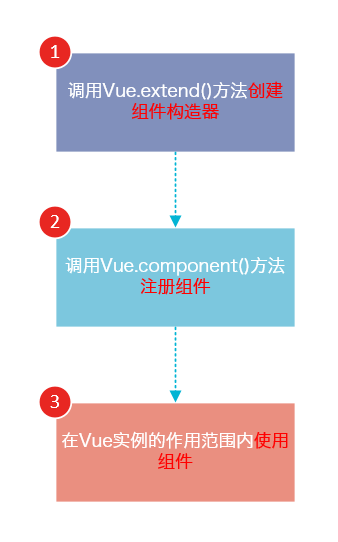
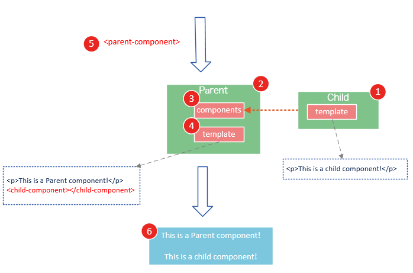

# Vue.js知识梳理
Vue.js是当下很火的一个JavaScript MVVM库，它是以数据驱动和组件化的思想构建的。相比于Angular.js，Vue.js提供了更加简洁、更易于理解的API，使得我们能够快速地上手并使用Vue.js。
### 1 MVVM 模式
<img src="images/chatu/vue1.png" alt="" />
ViewModel是Vue.js的核心，它是一个Vue实例。Vue实例是作用于某一个HTML元素上的，这个元素可以是HTML的body元素，也可以是指定了id的某个元素。
上图中的DOM Listeners和Data Bindings可以看作两个工具，它们是实现双向绑定的关键。
从View侧看，ViewModel中的DOM Listeners工具会帮我们监测页面上DOM元素的变化，如果有变化，则更改Model中的数据；
从Model侧看，当我们更新Model中的数据时，Data Bindings工具会帮我们更新页面中的DOM元素
### 2 创建Vue对象
```
<!--这是我们的View-->
<div id="app">
{{ message }}
</div>
<!-- 下面是js代码 -->
<!-- 创建一个 Vue 实例或 "ViewModel" -->
<!-- 它连接 View 与 Model -->
new Vue({
el: '#app', //容器元素, 可以用css选择器表示
data: {
message : "哈哈" //绑定数据
}
})
```
#### 2.1 数据绑定方法
方法1. 直接在data属性的对象中添加数据
方法2 . 用变量来保存数据
```
//数据绑定
// 方法1. 直接在data属性的对象中添加数据
new Vue({
el : ".box",
data : {
msg : "哈哈哈"
}
})
//方法2 . 用变量来保存数据
//给vue的data属性增加属性值后,都会绑定到vue的实例对象上. 如果是用变量中转数据的, 那么vue的data这个属性值与obj变量中的值是全等的,
// 修改vue的这data属性值, 对应的obj对象中的该属性值也会变化
// obj变量中的值
var obj = {
msg : "嘻嘻嘻",
obj : {
tag : "娱乐",
},
styles : "color:red;",
}
new Vue({
el : ".box",
data : obj
})
```
#### 2.2 插值
将数据中的数据同步到页面的过程
语法： {{key}}
我们不仅仅可以将值插入dom的内容中，还可以插入到标签的属性中，
插值中可以用表达式
```
<!-- html -->
//1. 在html中属性前加上 "*" 表示数据只允许第一次插入, 之后不允许修改或插入
//2. 用3层{} 可以把html标签还原为html内容,不转义,则obj.msg中对应的strong标签会作为html标签来渲染,而不显示字符串
//3. 插值中可以使用运算符
<div id="app" ">
<span style="{{*styles}}"">{{obj.tag}}</span><p>{{{obj.msg}}}</p>
<!-- 运算符 -->
<p>{{"￥" + jiage * 3 }}</p>
</div>
<!-- js -->
new Vue({
el : "#app",
data:{
styles : "color:yellow;",
obj : {
tag : "娱乐",
msg : '<strong>【北京】</strong>欧洲杯-葡萄牙点球战淘汰波兰';
}
}
})
```
#### 2.2 数据的动态绑定
用Vue的computed属性
```
<!-- html 中 -->
<input type="text" id="inp"> <span class="text" id="text">{{result}}</span>
//js
var vue = new Vue({
el : "#inp",
data : {
value : "89",
result: ""
},
//动态插值 在computed属性中设置
computed : {
result : function(){
return "$" + this.value * 0.7
}
}
})
```
#### 2.3 内置过滤器
Vue为我们提供了一些内置的过滤器，我们可以直接对插值调用
如 : currency 把数字转为美元表示 , uppercase ,lowercase , capitalize首字母大写
过滤器也可以自定义
```
<div class="box2">
<p>{{"￥" + jiage * 3 }}</p> <!--可以使用运算符-->
<!-- 使用过滤器 对结果进行处理（变大小写之类的） -->
<p>{{price * 3 | currency}}</p>
<p>{{styles | uppercase}}</p>
<p>{{name | capitalize}}</p>
</div>
//js部分
var data2 = {
jiage : 20,
price : 30,
styles : "color : red;",
name : "xu chao",
}
new Vue({
el : ".box2",
data : data2
})
```
#### 2.4 数据的双向绑定 v-model：
V-model：
当视图中的操作会修改到vue中的数据，同样，vue中的数据被修改时会映射到视图中
语法： 元素的属性中直接添加v-model属性，属性值即使与vue绑定数据中数据
```
<div id="app">
<!-- v-model 使数据双向绑定. -->
<input type="text" v-model="value" id="inp">
<span>{{value | currency}}</span>
</div>
var demo = new Vue({
// 获取容器元素
el: '#app',
data: {
value: 10
}
})
```
#### 2.5 类名的绑定 v-bind:class = "{classname : isShow}"
类名除了直接插值 还有2种绑定方式
#### 2.5.1 对象方式绑定 v-bind:class="{classname： isShow}"
语法：v-bind:class="{classname： isShow}"
如果类绑定的数据值isshow是true的时候，那么classname就会被添加上，否则classname就会被删除
```
<div id="app">
<!-- 绑定类名 -->
<!--
对象方式绑定,
k : v 对儿. k是类名 v是布尔值 值为true添加该类名, false不添加
"red" "bg-green" 为要添加的类名. -->
<span v-bind:class="{red: color, 'bg-green': bgColor}">{{value}}</span>
</div>
var demo = new Vue({
// 获取容器元素
el: '#app',
data: {
value: '欧洲杯-葡萄牙点球战淘汰波兰',
color: true, //则添加"red"类名
bgColor: true //添加 "bg-green"类名
}
})
```
#### 2.5.2 数组方式绑定 v-bind:class="[color, bg]"
语法：v-bind:class="[color, bg]"
如果传递的数据表示类的名称，我们需要将其添加到数组显示
注意：在传递类的名称时，一个数据属性只能对应一个类名
```
<div id="app">
<!--
数组方式绑定类名
数组中的值为 vue的data中的变量名, 在vue的实例中为这个值设置对应的类名
-->
<span v-bind:class="[color, bgColor]">{{value}}</span>
</div>
var demo = new Vue({
// 获取容器元素
el: '#app',
data: {
value: '欧洲杯-葡萄牙点球战淘汰波兰',
color: 'green', //增加一个 "green" 类
bgColor: 'blue' //增加一个"blue"类
}
})
```
v-bind:class 指令可以与普通的 class 特性共存：
```
<div class="static" v-bind:class="{ 'class-a': isA, 'class-b': isB }"></div>
```
#### 2.5.3 可以用三元表达式：
```
<div v-bind:class="[classA, isB ? classB : '']">
```
此例始终添加 classA，但是只有在 isB 是 true 时添加 classB 。
不过，当有多个条件 class 时这样写有些繁琐。在 1.0.19+ 中，可以在数组语法中使用对象语法：
#### 2.5.4 数组中使用对象语法
```
<div v-bind:class="[classA, { classB: isB, classC: isC }]">
```
#### 2.6 style 样式的绑定
语法：v-bind:style=“{key： value}”
也有2种绑定方式
#### 2.6.1 样式的对象绑定 v-bind:style="{key： value}""
语法：v-bind:style=“{key： value}”
与类的对象绑定方式不同点
1 样式中key表示的是css中样式属性，类中是类的名称
2 样式中vlaue值是css样式属性对应的值，类中是true和false
#### 2.6.2 样式的数组方式绑定 v-bind：style="[style1, style2]"
与类的数组方式的不同点
样式中value是一个对象表示一组css样式，他的对象中的值是驼峰表示法的css样式
类中value只能是一个类的名称（里面不能有空格）
```
<!-- 样式的对象绑定方法 -->
<!--
语法: v-bind:style = "{ k:v , k:v }"
k 是css样式的属性名,; 需要用驼峰命名
v 在vue的data中的变量. 是对应的属性值;
不同kv对儿直接用逗号分隔
-->
<div class="sty" v-bind:style = "{color : cor,fontSize:fz}" >{{val}}</div>
<!-- 样式的数组绑定 -->
<!--
数组中的变量 cor, ft 在vue的data中是一个对象, 里面罗列css样式
-->
<div class="sty2" v-bind:style = "[cor,ft]" >{{val}}</div>
<!-- js代码 -->
<!-- 样式的绑定
方法1. 对象绑定 -->
/*
语法: v-bind:style = {color:cor,font-size:fz};
变量(如 cor,fz) 值是css样式的值
*/
var vue3 = new Vue({
el : ".sty",
data : {
cor : "red",
fz : "20px",
val : "样式的绑定"
}
})
//样式的绑定
// 方法2 数组绑定
/*
语法: v-bind:style = [color,font]; 数组中的color,font 值是一组css语句
data中的 key值是html中对应的属性, 值是obj, 罗列css样式
样式中需要使用驼峰, 值是字符串
*/
var vue4 = new Vue({
el : ".sty2",
data : {
val : "样式的绑定2",
cor : {
color : "red",
backgroundColor : "yellow"
},
ft : {
fontSize:"40px",
fontWeight:"bold"
}
}
})
```
#### 2.6.3 直接绑定到一个样式对象
模板更清晰：
```
<div v-bind:style="styleObject"></div>
data: {
styleObject: {
color: 'red',
fontSize: '13px'
}
}
```
当 v-bind:style 使用需要厂商前缀的 CSS 属性时，如 transform，Vue.js 会自动侦测并添加相应的前缀。
### 3. Vue.js的常用指令
Vue.js的指令是以v-开头的，它们作用于HTML元素，指令提供了一些特殊的特性，将指令绑定在元素上时，指令会为绑定的目标元素添加一些特殊的行为，我们可以将指令看作特殊的HTML特性（attribute）。
Vue.js提供了一些常用的内置指令，接下来我们将介绍以下几个内置指令：
> * v-if指令
> * v-show指令
> * v-else指令
> * v-for指令
> * v-bind指令
> * v-on指令
Vue.js具有良好的扩展性，我们也可以开发一些自定义的指令，后面的文章会介绍自定义指令。
#### 3.1 v-if v-else v-show指令
v-if是条件渲染指令，它根据表达式的真假来删除和插入元素，它的基本语法如下：
```
v-if="expression"
```
expression是一个返回bool值的表达式，表达式可以是一个bool属性，也可以是一个返回bool的运算式
v-if 可以使用多个v-if 或 结合 v-else 一起使用
v-show 显示元素,不能使用v-else;
v-show 与 v-if 的区别. v-if 如果为false则不渲染元素.
v-show为false依然会渲染元素, 只是设为display:none 不显示
```
<!DOCTYPE html>
<html>
<head>
<meta charset="UTF-8">
<title></title>
</head>
<body>
<div id="app">
<h1>Hello, Vue.js!</h1>
<!-- v-if v-else v-show 指令 值为true则显示该标签, 为false则不显示-->
<h1 v-if="yes">Yes!</h1>
<h1 v-else="no">No!</h1>
<h1 v-show="age >= 25">Age: {{ age }}</h1>
<h1 v-if="name.indexOf('jack') >= 0">Name: {{ name }}</h1>
</div>
</body>
<script src="js/vue.js"></script>
<script>
var vm = new Vue({
el: '#app',
data: {
yes: true,
no: false,
age: 28,
name: 'keepfool'
}
})
</script>
</html>
```
> * 注意：v-if指令是根据条件表达式的值来执行元素的插入或者删除行为。
#### 3.2 v-for 指令
v-for指令基于一个数组渲染一个列表，它和JavaScript的遍历语法相似：
```
<div id="app">
<!--
v-for 会循环提取news中的数据渲染模板
-->
<template v-for="items in news">
<p><span v-show="items.type">{{items.type}} | </span>{{items.title}}</p>
</template>
</div>
<script type="text/javascript">
var data = {
news : [
{
title: '普遍便宜2成',
type: ''
},
{
title: '大众将再推一款全新SUV',
type: '时尚'
},
{
title: '李鸿章后代三位亿万富翁身份神秘'
}
]
}
var vue = new Vue({
el:"#app",
data : data
})
</script>
```
#### 3.3 v-model 数据的双向绑定
有时候，我们可能会处理一些表单操作，此时会输入一些数据，如何将这些数据映射js中
通过对这表单元素设置v-model指令来实现数据双向绑定，原理上是对这些表单元素在vue中绑定了一些事件来实现。
```
<!DOCTYPE html>
<html lang="en">
<head>
<meta charset="UTF-8">
<title>Document</title>
</head>
<body>
<!--
1 复选框
给每个选项都要绑定v-model 属性
-->
<div id="app">
<label for="s37">37</label>
<input type="checkbox" id="s37" v-model="size.s37">
<label for="s38">38</label>
<input type="checkbox" id="s38" v-model="size.s38">
<label for="s39">39</label>
<input type="checkbox" id="s39" v-model="size.s39">
<!-- | json 是过滤器, 把数据以json形式显示 -->
<p>{{size | json }}</p>
</div>
<!--
2 单选按钮
每个的v-model属性是相同的, 但是每个选项的value值不同
-->
<div id="app2">
<label for="s37">37</label>
<input type="radio" id="s37" value="37" v-model="size">
<label for="s38">38</label>
<input type="radio" id="s38" value="38" v-model="size">
<label for="s39">39</label>
<input type="radio" id="s39" value="39" v-model="size">
<p>{{size}}</p>
</div>
<!--
3 下拉列表
v-model属性绑定在select标签上
-->
<div id="app3">
<!-- multiple属性 支持多选 -->
<select v-model = "size" multiple>
<!-- 用 v-for 来循环生成option选项 -->
<option v-for = "k in sizeArr">{{k}}</option>
</select>
<p>鞋码 : {{size}}</p>
</div>
<hr>
<!-- 4 输入框 -->
<div id="app4">
<input type="text" v-model = "wenben">
<p>{{wenben}}</p>
<br>
<!-- debounce 属性表示延迟多少毫秒才更新数据 -->
<!-- lazy 属性表示失去焦点才更新数据 -->
<input type="text" debounce="1000" lazy v-model = "wenben2">
<p>{{wenben2}}</p>
</div>
<script type="text/javascript" src="vue.js"></script>
<script type="text/javascript">
//1. 复选框数据获取
new Vue({
el : "#app",
data : {
size : {
s37 : false,
s38 : true, //默认选择与否
s39 : false
}
}
})
//2. 单选框
new Vue({
el : "#app2",
data : {
size : "38" //默认值
}
})
//3 下拉菜单
new Vue({
el : "#app3",
data : {
size : "43" ,
sizeArr : [35,36,37,38,39,40,41,42],
"countrys" : ['中国大陆', '中国香港', '中国台湾', '中国马兰西亚']
}
})
// 4 输入框
new Vue({
el : "#app4",
data : {
wenben : "haha",
wenben2 : "wenben2"
}
})
</script>
</body>
</html>
```
#### 3.4 v-bind 用于绑定属性
v-bind 用于动态绑定dom中的属性的
如 绑定src属性
< img v-bind:src='src'>
绑定href属性
< a v-bind:href='lianjie'>< /a>
绑定类名
< div v-bind:class={red:isShow}>< /div>
绑定样式
< div v-bind:style={color : cor}>< /div>
设置子组件是否显示
```
<!-- 渲染子组件, 可以通过修改 v-bind:is = "组件名称" 通过修改组件名称来渲染不同的组件 -->
<component v-bind:is="view"></component>
<!-- 修改view的值为不同的组件名称就可以渲染不同的组件 -->
```
### 4. 自定义指令 v-directive
是将传递的数据映射到dom的行为
调用自定义指令：直接对dom元素添加上指令的名称，注意：指令的名称前面加上v-，对指令传递数据要用=赋值
定义自定义指令：通过Vue的directive方法实现对自定义指令的注册，
参数有两个
表示指令的名称：注意指令的名称不能有v-，注意：指令名称不能存在大写字母，字母间只能添加-
表示指令的主体，描述这个指令时干嘛的
This指向的是当前自定义指令实例化对象
指令创建完得到一个指令对象，那么指令对象中有个el属性，表示的调用该指令的dom元素
```
<div id="app1">
<input type="text" v-model="msg">
<!--
绑定自定义指令
v- + 自定义的指令名称
如果有输出的话 "=" 后面加输出的内容
-->
<p v-my-directive = "msg"></p>
</div>
<script type="text/javascript" src="vue.js"></script>
<script type="text/javascript">
// 定义指令
/**
* @para1 自定义的指令名称 ; 指令名称中不能有"v-", 也不能有大写字母
* @para2 指令的内容,方法
*/
Vue.directive("my-directive",{
//绑定方法,在元素绑定指令时执行
bind : function () {
// 应用。有时候绑定一个指令需要执行大量的业务逻辑，此时我们将这些业务逻辑放在bind中，这样在update时候，就不会重复执行
console.log("绑定指令");
},
// 内容更新时候调用,这个内容指的是传递的内容msg，msg改动时即使input输入时
/**
* 指令内容更新调用的方法
* @val 表示当前的内容msg值
* @oldval 表示前一个内容msg的值，第一次调用时，该参数不存在
*/
update : function (val,oldval) {
console.log(this);
this.el.innerHTML = val + "自定义指令";
},
// 对元素解除绑定的指令时执行
unbind :function () {
}
})
//实例化vue
new Vue({
el : "#app1",
data : {
msg : ""
}
})
</script>
```
### 5. 自定义过滤器 filter
我们通过Vue.filter方法实现自定义过滤器
接收两个参数
参数1. 表示过滤器的名称：
参数2 过滤器的方法函数
它有一个参数，表示被处理的数据
它的this指向的是vue实例化对象，因此可以在该函数中访问到该vue实例化对象中的属性和方法
调用
```
<div id="app">
<p>驼峰命名转化</p>
<p>
<input type="text" v-model = "txt">
</p>
<!-- | 后面为过滤器名称 后面可以再加多个参数 -->
<p>{{txt | camelToComm}}</p>
</div>
<script type="text/javascript" src="vue.js"></script>
<script type="text/javascript">
//自定义的过滤器
/**
@para1 过滤器名称.
@para2 过滤器的方法 可以接受多个vue data中的属性作为参数
*/
Vue.filter("camelToComm",function (val) {
return val.replace(/[A-Z]/g,function(m,$1){
return "-" + m.toLowerCase();
})
})
new Vue({
el : "#app",
data :{
txt : ""
}
})
</script>
```
```
<div class="app" id="app">
<label for="userName">输入价格</label>
<input type="text" v-model="str" id="userName">
<!-- 过滤器携带多个参数 -->
<span>{{str | showPrice pricePre}}</span>
<label for="userName">输入价格</label>
<input type="text" v-model="str2" id="userName">
<span>{{str2 | showPrice '价格是：'}}</span>
</div>
<script type="text/javascript" src="vue.js"></script>
<script type="text/javascript">
// 定义一个驼峰式命名过滤器
// 方法中的第一个值对应的 str, 即要处理的值, 后面的参数为过滤器后面传递的参数 (pricePre)
Vue.filter('showPrice', function (value, pre) {
console.log(arguments)
return pre + '￥' + (+value).toFixed(2)
})
new Vue({
el: "#app",
data: {
str: '',
str2: '',
pricePre: "输入的价格是 "
}
})
</script>
```
### 5. 事件的绑定 v-on
Dom中使用
语法 v-on:eventName
例如绑定click事件
```
<button v-on:click="clickBtn">按钮</button>
```
注册
语法：在Vue类的参数中的methods属性中添加事件回调函数
```
new Vue({
el: '#app',
methods: {
clickBtn: function (e) {
console.log(this)
console.log(arguments)
}
}
})
```
Vue中的事件回调函数
它的this指向的是vue实例化对象
参数是事件对象
#### 5.1 按键修饰符
按键修饰符enter、tab、delete、esc、space、up、down、left、right
用法，在事件名称后面通过点语法添加
这是一类键盘事件，表示当点击键盘上的向左按钮，会触发search回调函数
```
<input type="text" v-on:keyup.left="search">
```
事件参数的传递
在dom上注册事件时，在事件名称后面加上一对圆括号，圆括号里面就是我们传递的数据参数
```
<!-- 在事件中传递参数 第一个参数是这个事件对象 后面的参数是要传递的数据-->
<input type="text" v-on:keyup="search($event, msg, 'world')">
<script type="text/javascript">
new Vue({
el: '#app',
data: {
msg: 'yellow'
},
methods: {
search: function (e, msg, str) {
console.log(arguments)
}
}
})
</script>
```
### 6. 过渡 transition="demo"
Vue的过渡动画
语法 transition=”demo”
Demo-transition，demo-enter，demo-leave，通过这三个类，我们可以在css中定义css动画
```
<!DOCTYPE html>
<html lang="en">
<head>
<meta charset="UTF-8">
<title></title>
</head>
<body>
<style type="text/css">
.my-div {
background: green;
width: 200px;
height: 200px;
}
/* 在css 中定义动画*/
.demo-transition {
transition: all 1s;
width: 200px;
height: 200px;
opacity: 1;
}
.demo-enter {
width: 0;
height: 0;
opacity: 0;
}
.demo-leave {
width: 0;
height: 0;
opacity: 0;
}
</style>
<div id="app">
<button v-on:click="showDiv">show div</button>
<!-- 显示动画的元素加上 transition="demo" 属性, "demo" 是css中定义的动画名称 那么当这个元素的属性改变后, 会以过渡的形式呈现 -->
<div class="my-div" transition="demo" v-show="isShow">content</div>
</div>
<script type="text/javascript" src="vue.js"></script>
<script type="text/javascript">
new Vue({
el: '#app',
data: {
isShow: false
},
methods: {
showDiv: function () {
this.isShow = this.isShow ? false : true;
}
}
})
</script>
</body>
</html>
```
### 7. 组件
组件系统是Vue.js其中一个重要的概念，它提供了一种抽象，让我们可以使用独立可复用的小组件来构建大型应用，任意类型的应用界面都可以抽象为一个组件树：
<img src="images/chatu/vueComponents.png" alt="" />
### 7.1 那么什么是组件呢？
组件可以扩展HTML元素，封装可重用的HTML代码，我们可以将组件看作自定义的HTML元素。
### 7.2 组件的创建和注册
基本步骤
Vue.js的组件的使用有3个步骤：创建组件构造器、注册组件和使用组件。

下面的代码演示了这3个步骤：
```
<!DOCTYPE html>
<html>
<body>
<div id="app">
<!-- 3. #app是Vue实例挂载的元素，应该在挂载元素范围内使用组件-->
<my-component></my-component>
</div>
</body>
<script src="js/vue.js"></script>
<script>
// 1.创建一个组件构造器
var myComponent = Vue.extend({
template: '<div>This is my first component!</div>'
})
// 2.注册组件，并指定组件的标签，组件的HTML标签为<my-component>
Vue.component('my-component', myComponent)
new Vue({
el: '#app'
});
</script>
</html>
```
理解组件的创建和注册
我们用以下几个步骤来理解组件的创建和注册：
> * 1. Vue.extend()是Vue构造器的扩展，调用Vue.extend()创建的是一个组件构造器，而不是一个具体的组件实例。
> * 2. Vue.extend()构造器有一个选项对象，选项对象的template属性用于定义组件要渲染的HTML。
> * 3. 使用Vue.component()注册组件时，需要提供2个参数，第1个参数时组件的标签，第2个参数是组件构造器。
> * 4. Vue.component()方法内部会调用组件构造器，创建一个组件实例。
> * 5. 组件应该挂载到某个Vue实例下，否则它不会生效。
请注意第5点，以下代码在3个地方使用了<my-component>标签，但只有#app1和#app2下的<my-component>标签才起到作用。
```
<!DOCTYPE html>
<html>
<body>
<div id="app1">
<!-- 该组件注册在 app1 元素下, 这里也放在app1元素内, 所以会被渲染 -->
<my-component></my-component>
</div>
<div id="app2">
<!-- 这个组件也会渲染 -->
<my-component></my-component>
</div>
<!--该组件不会被渲染-->
<my-component></my-component>
</body>
<script src="js/vue.js"></script>
<script>
var myComponent = Vue.extend({
template: '<div>This is a component!</div>'
})
Vue.component('my-component', myComponent)
var app1 = new Vue({
el: '#app1'
});
var app2 = new Vue({
el: '#app2'
})
</script>
</html>
```
### 7.3 全局注册和局部注册
调用Vue.component()注册组件时，组件的注册是全局的，这意味着该组件可以在任意Vue示例下使用。
如果不需要全局注册，或者是让组件使用在其它组件内，可以用选项对象的components属性实现局部注册。
上面的示例可以改为局部注册的方式：
```
<!DOCTYPE html>
<html>
<body>
<div id="app">
<!-- 3. my-component只能在#app下使用-->
<my-component></my-component>
</div>
</body>
<script src="js/vue.js"></script>
<script>
// 1.创建一个组件构造器
var myComponent = Vue.extend({
template: '<div>This is my first component!</div>'
})
new Vue({
el: '#app',
components: {
// 2. 将myComponent组件注册到Vue实例下
'my-component' : myComponent
}
});
</script>
</html>
```
### 7.4 父组件和子组件
我们可以在组件中定义并使用其他组件，这就构成了父子组件的关系。
```
<!DOCTYPE html>
<html>
<body>
<div id="app">
<parent-component>
</parent-component>
</div>
</body>
<script src="js/vue.js"></script>
<script>
var Child = Vue.extend({
template: '<p>This is a child component!</p>'
})
var Parent = Vue.extend({
// 在Parent组件内使用<child-component>标签
template :'<p>This is a Parent component</p><child-component></child-component>',
components: {
// 局部注册Child组件，该组件只能在Parent组件内使用
'child-component': Child
}
})
// 全局注册Parent组件
Vue.component('parent-component', Parent)
new Vue({
el: '#app'
})
</script>
</html>
```
我们分几个步骤来理解这段代码：
var Child = Vue.extend(...)定义一了个Child组件构造器
var Parent = Vue.extend(...)定义一个Parent组件构造器
components: { 'child-component': Child }，将Child组件注册到Parent组件，并将Child组件的标签设置为child-component。
template :'< p>This is a Parent component< /p>< child-component></ child-component>'，在Parent组件内以标签的形式使用Child组件。
Vue.component('parent-component', Parent) 全局注册Parent组件
在页面中使用< parent-component>标签渲染Parent组件的内容，同时Child组件的内容也被渲染出来

Child组件是在Parent组件中注册的，它只能在Parent组件中使用，确切地说：子组件只能在父组件的template中使用。
请注意下面两种子组件的使用方式是错误的：
1. 以子标签的形式在父组件中使用
```
<!-- 错误的使用方式 -->
<div id="app">
<parent-component>
<child-component></child-component>
</parent-component>
</div>
```
为什么这种方式无效呢？因为当子组件注册到父组件时，Vue.js会编译好父组件的模板，模板的内容已经决定了父组件将要渲染的HTML。
< parent-component>…</ parent-component>相当于运行时，它的一些子标签只会被当作普通的HTML来执行，< child-component></ child-component>不是标准的HTML标签，会被浏览器直接忽视掉。
2. 在父组件标签外使用子组件
```
<!-- 错误的使用方式 -->
<div id="app">
<parent-component>
</parent-component>
<child-component>
</child-component>
</div>
```
运行这段代码，浏览器会报错
### 7.5 组件注册语法糖
以上组件注册的方式有些繁琐，Vue.js为了简化这个过程，提供了注册语法糖。
使用Vue.component()直接创建和注册组件：
```
// 全局注册，my-component1是标签名称
Vue.component('my-component1',{
template: '<div>This is the first component!</div>'
})
var vm1 = new Vue({
el: '#app1'
})
```
Vue.component()的第1个参数是标签名称，第2个参数是一个选项对象，使用选项对象的template属性定义组件模板。
使用这种方式，Vue在背后会自动地调用Vue.extend()。
在选项对象的components属性中实现局部注册：
```
var vm2 = new Vue({
el: '#app2',
components: {
// 局部注册，my-component2是标签名称
'my-component2': {
template: '<div>This is the second component!</div>'
},
// 局部注册，my-component3是标签名称
'my-component3': {
template: '<div>This is the third component!</div>'
}
}
})
```
### 7.6 使用script或template标签 来保存模板
尽管语法糖简化了组件注册，但在template选项中拼接HTML元素比较麻烦，这也导致了HTML和JavaScript的高耦合性。
庆幸的是，Vue.js提供了两种方式将定义在JavaScript中的HTML模板分离出来。
1 script 模板标签
```
<!DOCTYPE html>
<html>
<body>
<div id="app">
<my-component></my-component>
</div>
<script type="text/x-template" id="myComponent">
<div>This is a component!</div>
</script>
</body>
<script src="js/vue.js"></script>
<script>
Vue.component('my-component',{
//template选项现在不再是HTML元素，而是一个id，Vue.js根据这个id查找对应的元素，然后将这个元素内的HTML作为模板进行编译。
template: '#myComponent'
})
new Vue({
el: '#app'
})
</script>
</html>
```
* 注意：使用< script>标签时，type指定为text/x-template，意在告诉浏览器这不是一段js脚本，浏览器在解析HTML文档时会忽略< script>标签内定义的内容。
2. 使用< template>标签
如果使用< template>标签，则不需要指定type属性。
```
<!DOCTYPE html>
<html>
<head>
<meta charset="UTF-8">
<title></title>
</head>
<body>
<div id="app">
<my-component></my-component>
</div>
<template id="myComponent">
<div>This is a component!</div>
</template>
</body>
<script src="js/vue.js"></script>
<script>
Vue.component('my-component',{
template: '#myComponent'
})
new Vue({
el: '#app'
})
</script>
</html>
```
在理解了组件的创建和注册过程后，建议使用< script>或< template>标签来定义组件的HTML模板。
这使得HTML代码和JavaScript代码是分离的，便于阅读和维护。
另外，在 Vue\.js中，创建 \.vue后缀的文件，在 \.vue文件中定义组件,
### 7.7 组件的el和data选项
传入Vue构造器的多数选项也可以用在 Vue.extend() 或Vue.component()中，不过有两个特例： data 和el。
Vue.js规定：在定义组件的选项时，data和el选项必须使用函数。
下面的代码在执行时，浏览器会提出一个错误
```
//组件中的data后面用对象会报错, 应该用函数
Vue.component('my-component', {
data: {
a: 1
}
})
```
另外，如果data选项指向某个对象，这意味着所有的组件实例共用一个data。
我们应当使用一个函数作为 data 选项，让这个函数返回一个新对象：
```
//正确用法
Vue.component('my-component', {
data: function(){
return {a : 1}
}
})
```
### 7.8 传递数据 使用 props 可以把父组件的数据传给子组件
组件实例的作用域是孤立的。这意味着不能并且不应该在子组件的模板内直接引用父组件的数据。可以使用 props 把父组件的数据传给子组件。
props基础示例
示例1
```
<div id="app">
<input type="text" v-model="inp">
<span>{{inp}}</span>
<!-- 组件通常是一个自定义元素 -->
<my-component v-bind:msg="inp"></my-component>
</div>
// 定义了一个组件，他的模板是template
var myComponent = Vue.extend({
// 将组件上绑定的数据映射到组件上
props: ['msg'],
template: '<h1>hello {{msg}}</h1>'
})
Vue.component('my-component', myComponent)
// 将组件内容放入页面中，就需要注册
new Vue({
el: '#app',
data: {
inp: ''
}
})
```
下面的代码定义了一个子组件my-component，在Vue实例中定义了data选项。
```
// 子组件
var vm = new Vue({
el: '#app',
data: {
name: 'keepfool',
age: 28
},
components: {
'my-component': {
template: '#myComponent',
// 在props数组中可以传入父组件的数据
props: ['myName', 'myAge']
}
}
})
//子组件的模板
<template id="myComponent">
<table>
<tr>
<th colspan="2">
子组件数据
</th>
</tr>
<tr>
<td>my name</td>
<!-- 使用了父组件的数据 -->
<td>{{ myName }}</td>
</tr>
<tr>
<td>my age</td>
<td>{{ myAge }}</td>
</tr>
</table>
</template>
// 父组件
<div id="app">
<my-component v-bind:my-name="name" v-bind:my-age="age"></my-component>
</div>
```
> 注意：在子组件中定义prop时，使用了camelCase命名法。由于HTML特性不区分大小写，camelCase的prop用于特性时，需要转为 kebab-case（短横线隔开）。例如，在prop中定义的myName，在用作特性时需要转换为my-name。
**父组件是如何将数据传给子组件的呢？相信看了下面这图，也许你就能很好地理解了。**
<img src="images/chatu/vueCom4.png" alt="" />
在父组件中使用子组件时，通过以下语法将数据传递给子组件：
```
<child-component v-bind:子组件prop="父组件数据属性"></child-component>
```
> 用props 绑定数据只能从父组件传递到子组件
##### 7.8.2 双向绑定 .sync
可以使用.sync显式地指定双向绑定，这使得子组件的数据修改会回传给父组件
。
```
<!-- 双向绑定 -->
<my-component v-bind:my-name.sync="name" v-bind:my-age.sync="age"></my-component>
```
##### 7.8.1 单次绑定 .once
可以使用.once显式地指定单次绑定，单次绑定在建立之后不会同步之后的变化，这意味着即使父组件修改了数据，也不会传导给子组件
```
<my-component v-bind:my-name.once="name" v-bind:my-age.once="age"></my-component>
```
### 7.9 $dispatch 子组件到父组件的通信，
vue中的观察者模式
在父组件的events属性中订阅消息 , 直接用事件名作为属性, 后面跟一个函数作为方法即可
```
this.$dispatch('app-msg', 'hello')
```
可以通过消息系统实现，在父组件中订阅消息（events属性内），在子组件中发布这条消息，
```
// 定义了一个组件，他的模板是template
var myComponent = Vue.extend({
// 将组件上绑定的数据映射到组件上
props: ['msg'],
template: '<h1>hello {{msg}}</h1> <button v-on:click="toUpper"> h1内容大写</button>',
methods: {
toUpper: function () {
// 将msg变成大写形式
this.msg = this.msg.toUpperCase();
this.$dispatch('app-msg', 'hello')
}
}
})
Vue.component('my-component', myComponent)
// 将组件内容放入页面中，就需要注册
var app = new Vue({
el: '#app',
data: {
inp: ''
},
events: {
'app-msg': function (msg) {
console.log(this);
console.log(arguments)
console.log(111, msg)
}
}
})
```
### 7.10 $broadCast 父组件到子组件的通信
vue中的观察者模式
使用 $boradCast 可以实现父组件到子组件的通信
在子组件的events属性中订阅消息即可
### 7.11 $set 为组件增加数据
要为组件增加数据不能用this.msg 这种方式. 需要用 $set 来增加数据
### 7.12 一个组件的完整的方法
#### 7.12.1 created 方法
组件创建好后就会执行的方法
#### 7.12.2 events
定义组件中的事件对应的方法
#### 7.12.3 methods
定义在组件中用到的方法
定义一个组件的完整方法
定义一个组件
```
Vue.extend({
template : "", //模板
// data 设置组件的数据
data : {
},
//设置事件中的方法
events : {
},
//组件创建好后要执行的方法
created : function(){
},
// 定义在组件中用到的方法
methods : {
}
})
```
```
<!-- 定义一个list列表组件 -->
<!DOCTYPE html>
<html lang="en">
<head>
<meta charset="UTF-8" />
<title>Document</title>
</head>
<body>
<!-- 父组件 -->
<div class="app" id="app">
<header class='app-header'>
</header>
<!-- 这里用来渲染组件, 可以通过修改 v-bind:is = "组件名称" 组件名称来渲染不同的组件 -->
<component v-bind:is="view"></component>
</div>
<!-- 组件的模板 -->
<script type="text/template" id="tpl_list">
<section class="list-page">
<ul class="type clearfix">
<!-- 也可以使用 @click 注册事件, 等价于 v-on:click -->
<li v-for="item in types" @click = "sortBy(item.key)">
<span>{{item.value}}</span>
<span class="arrow"></span>
</li>
</ul>
<ul class="list">
<li v-for="item in list">
<img v-bind:src="'img/list/' + item.img" alt="">
<h3>{{item.title}}</h3>
<span class="price">{{item.price | price}} </span>
</li>
</ul>
<div v-on:click = "loadMore" class="load-more">
<span>{{other.length | loadMore}}</span>
<span class="arrow"><span class="arrow green"></span></span>
</div>
</section>
</script>
</body>
</html>
<script type="text/javascript">
// 定义组件
var List = Vue.extend({
template: Util.tpl("tpl_list"), //设置模板 这里把模板保存在了Util的方法里
// 设置数据, 组件中的数据需要用函数 return 的方法. 不能直接用对象
data : function(){
return {
types : [
{value: '价格排序', key: 'price'},
{value: '销量排序', key: 'sales'},
{value: '好评排序', key: 'evaluate'},
{value: '优惠排序', key: 'discount'}
],
list : [],
other : []
}
},
//子组件中的事件
events:{
// 这个事件由父组件的 $broadCast 方法来传递的
"reload-list" : function (argument) {
// 收到父组件传递的消息
//重新渲染视图
this.load();
}
},
// 组件创建完成后会执行 created 中的方法
created : function () {
var that = this;
// 调用ajax请求来获取数据
Util.ajax("data/list.json",function(res){
var obj = JSON.parse(res);
if(obj.errno === 0){
// $set用来给组件增加数据
that.$set("list",obj.data.slice(0,3))
}
})
},
// methods 为组件定义的方法,针对事件中设置的方法需要在这里定义 如在组件的html中设置了 v-on:click = "loadMore" ; 就要在 methods中设置相应的方法
methods :{
//加载剩余的几条
loadMore : function (e) {
//把other中的数据连接到list中即可加载
this.list = [].concat(this.list,this.other)
this.other = [];
},
}
})
//注册组件 这里一共用到了3个组件
Vue.component('home', Home)
Vue.component('list', List)
Vue.component('product', Product)
var app = new Vue({
el: '#app',
data: {
//这里控制要显示的视图组件 修改 view的值就可以修改显示的组件
view: '',
// 存储哈希中信息的
query : [],
showSearch : true
},
// 定义一些方法
methods : {
search : function(e){
var msg = e.target.value;
//根据搜索关键词来改变hash
location.hash = "#list/search/" + msg;
},
},
})
</script>
```